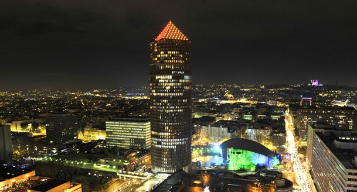

The Tour Part-Dieu (formerly Tour du Crédit Lyonnais, or Le Crayon) is a skyscraper in Lyon, France. On the top ten floors there is radisson blu Hotel, which is the highest hotel of europe.

It is a work of the American firm Araldo Cossutta & Associates and the construction occurred between 1972 and 1977.
it's one of the tallest building in Lyon :
| Tour incity | 202 meters |
| Le crayon | 165 meters |
| Tour Oxygene | 117 meters |
return to the main website: